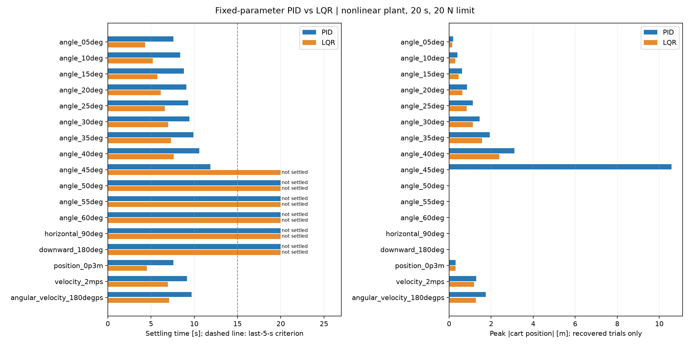

原连续非线性对象；M=m=1 kg，L=0.5 m，20 s，采样0.02 s，力上限20 N。配置和反馈源码校验一致，未调参。
恢复：最后5 s全部记录满足 |p|<0.01 m、|v|<0.01 m/s、|θ|<0.1°、|ω|<0.1°/s。恢复时间为进入并保持至结束的时刻；较晚进入阈值单列。角度沿用原始连续角度，未折返。无限轨道，恢复不等于满足实物行程约束。

| 初态 | 控制器 | 结果 | 恢复时间/s | 最大|位置|/m | 力RMS/N | 力饱和占比 | 归档 |
|---|---|---|---|---|---|---|---|
| 01_angle_05deg | PID | 恢复 | 7.58 | 0.197 | 0.300 | 0.0% | 曲线 · 视频 · 配置 · 数据 |
| 01_angle_05deg | LQR | 恢复 | 4.32 | 0.146 | 0.272 | 0.0% | 曲线 · 视频 · 配置 · 数据 |
| 02_angle_10deg | PID | 恢复 | 8.37 | 0.400 | 0.610 | 0.0% | 曲线 · 视频 · 配置 · 数据 |
| 02_angle_10deg | LQR | 恢复 | 5.21 | 0.296 | 0.553 | 0.0% | 曲线 · 视频 · 配置 · 数据 |
| 03_angle_15deg | PID | 恢复 | 8.80 | 0.618 | 0.941 | 0.0% | 曲线 · 视频 · 配置 · 数据 |
| 03_angle_15deg | LQR | 恢复 | 5.74 | 0.456 | 0.848 | 0.0% | 曲线 · 视频 · 配置 · 数据 |
| 04_angle_20deg | PID | 恢复 | 9.10 | 0.858 | 1.305 | 0.0% | 曲线 · 视频 · 配置 · 数据 |
| 04_angle_20deg | LQR | 恢复 | 6.13 | 0.631 | 1.169 | 0.0% | 曲线 · 视频 · 配置 · 数据 |
| 05_angle_25deg | PID | 恢复 | 9.31 | 1.130 | 1.722 | 0.0% | 曲线 · 视频 · 配置 · 数据 |
| 05_angle_25deg | LQR | 恢复 | 6.60 | 0.837 | 1.522 | 0.2% | 曲线 · 视频 · 配置 · 数据 |
| 06_angle_30deg | PID | 恢复 | 9.45 | 1.451 | 2.217 | 0.0% | 曲线 · 视频 · 配置 · 数据 |
| 06_angle_30deg | LQR | 恢复 | 6.99 | 1.127 | 1.939 | 0.4% | 曲线 · 视频 · 配置 · 数据 |
| 07_angle_35deg | PID | 恢复 | 9.91 | 1.941 | 2.744 | 0.2% | 曲线 · 视频 · 配置 · 数据 |
| 07_angle_35deg | LQR | 恢复 | 7.32 | 1.572 | 2.489 | 0.9% | 曲线 · 视频 · 配置 · 数据 |
| 08_angle_40deg | PID | 恢复 | 10.59 | 3.113 | 3.598 | 1.1% | 曲线 · 视频 · 配置 · 数据 |
| 08_angle_40deg | LQR | 恢复 | 7.61 | 2.383 | 3.412 | 1.5% | 曲线 · 视频 · 配置 · 数据 |
| 09_angle_45deg | PID | 恢复 | 11.85 | 10.579 | 5.854 | 3.0% | 曲线 · 视频 · 配置 · 数据 |
| 09_angle_45deg | LQR | 20 s内未恢复 | — | 1675.943 | 19.945 | 99.1% | 曲线 · 视频 · 配置 · 数据 |
| 10_angle_50deg | PID | 20 s内未恢复 | — | 2000.091 | 20.000 | 100.0% | 曲线 · 视频 · 配置 · 数据 |
| 10_angle_50deg | LQR | 20 s内未恢复 | — | 2000.091 | 20.000 | 100.0% | 曲线 · 视频 · 配置 · 数据 |
| 11_angle_55deg | PID | 20 s内未恢复 | — | 1999.977 | 20.000 | 100.0% | 曲线 · 视频 · 配置 · 数据 |
| 11_angle_55deg | LQR | 20 s内未恢复 | — | 1999.977 | 20.000 | 100.0% | 曲线 · 视频 · 配置 · 数据 |
| 12_angle_60deg | PID | 20 s内未恢复 | — | 1999.968 | 20.000 | 100.0% | 曲线 · 视频 · 配置 · 数据 |
| 12_angle_60deg | LQR | 20 s内未恢复 | — | 1999.968 | 20.000 | 100.0% | 曲线 · 视频 · 配置 · 数据 |
| 13_horizontal_90deg | PID | 20 s内未恢复 | — | 2000.167 | 20.000 | 100.0% | 曲线 · 视频 · 配置 · 数据 |
| 13_horizontal_90deg | LQR | 20 s内未恢复 | — | 2000.167 | 20.000 | 100.0% | 曲线 · 视频 · 配置 · 数据 |
| 14_downward_180deg | PID | 20 s内未恢复 | — | 2000.120 | 20.000 | 100.0% | 曲线 · 视频 · 配置 · 数据 |
| 14_downward_180deg | LQR | 20 s内未恢复 | — | 2000.120 | 20.000 | 100.0% | 曲线 · 视频 · 配置 · 数据 |
| 15_position_0p3m | PID | 恢复 | 7.60 | 0.308 | 0.153 | 0.0% | 曲线 · 视频 · 配置 · 数据 |
| 15_position_0p3m | LQR | 恢复 | 4.54 | 0.307 | 0.104 | 0.0% | 曲线 · 视频 · 配置 · 数据 |
| 16_velocity_2mps | PID | 恢复 | 9.14 | 1.285 | 1.527 | 0.0% | 曲线 · 视频 · 配置 · 数据 |
| 16_velocity_2mps | LQR | 恢复 | 6.95 | 1.193 | 1.241 | 0.0% | 曲线 · 视频 · 配置 · 数据 |
| 17_angular_velocity_180degps | PID | 恢复 | 9.69 | 1.740 | 2.265 | 0.0% | 曲线 · 视频 · 配置 · 数据 |
| 17_angular_velocity_180degps | LQR | 恢复 | 7.10 | 1.278 | 1.878 | 0.3% | 曲线 · 视频 · 配置 · 数据 |